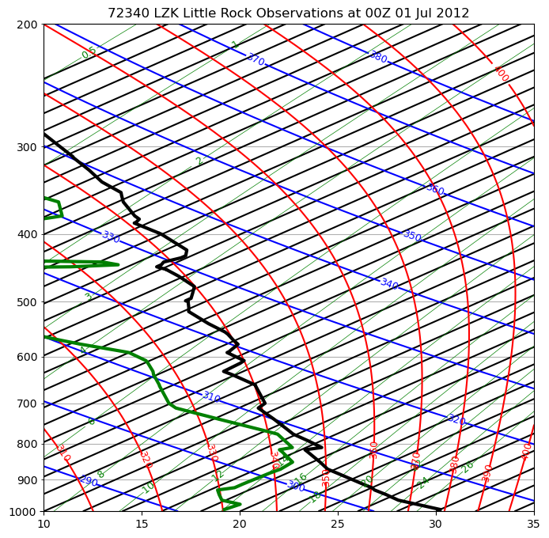
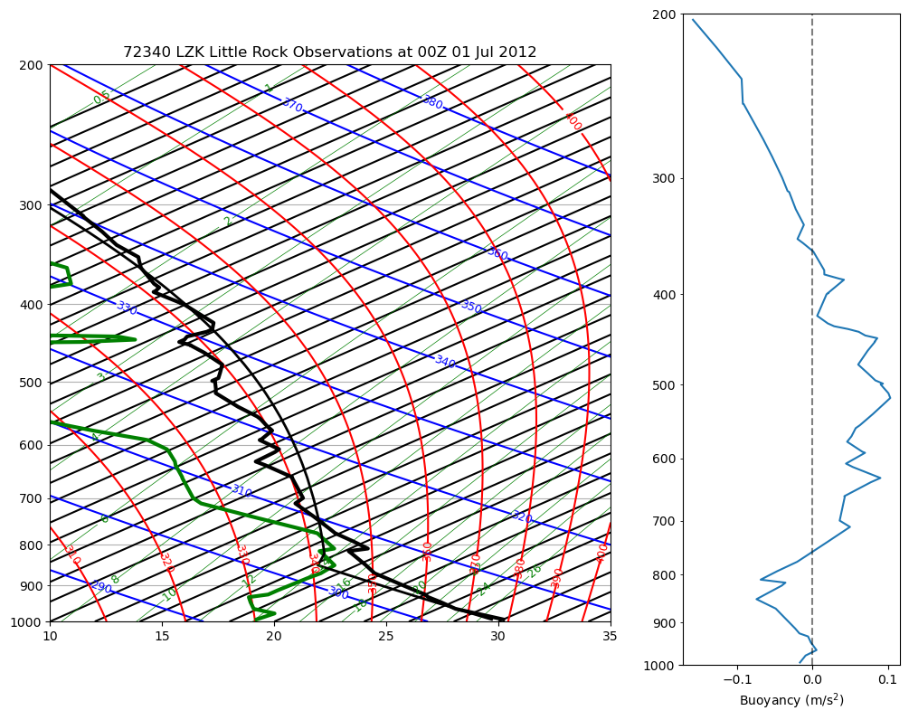

Cape Part 1 – demo#
This notebook shows how to calculate CAPE for soundings downloaded from the Wyoming website. It does the CAPE integration described in Thompkins p. 49
The download link: cape_part1.ipynb
import numpy as np
import pandas as pd
from pprint import pformat
from a405.thermo.constants import constants as c
from a405.thermo.thermlib import convertSkewToTemp, convertTempToSkew
from a405.skewT.fullskew import makeSkewWet,find_corners,make_default_labels
from a405.soundings.wyominglib import write_soundings, read_soundings
from matplotlib import pyplot as plt
Grab a Little Rock sounding#
write = False
if write:
values=dict(region='naconf',year='2012',month='7',start='0100',stop='3000',station='72340')
write_soundings(values, 'littlerock')
soundings= read_soundings('littlerock')
else:
soundings= read_soundings('littlerock')
soundings['sounding_dict'].keys()
dict_keys([(2012, 7, 1, 0), (2012, 7, 1, 12), (2012, 7, 2, 0), (2012, 7, 2, 12), (2012, 7, 3, 0), (2012, 7, 3, 12), (2012, 7, 4, 0), (2012, 7, 4, 12), (2012, 7, 5, 0), (2012, 7, 5, 12), (2012, 7, 6, 0), (2012, 7, 6, 12), (2012, 7, 7, 0), (2012, 7, 7, 12), (2012, 7, 8, 0), (2012, 7, 8, 12), (2012, 7, 9, 0), (2012, 7, 9, 12), (2012, 7, 10, 0), (2012, 7, 10, 12), (2012, 7, 11, 0), (2012, 7, 11, 12), (2012, 7, 12, 0), (2012, 7, 12, 12), (2012, 7, 13, 0), (2012, 7, 13, 12), (2012, 7, 14, 0), (2012, 7, 14, 12), (2012, 7, 15, 0), (2012, 7, 15, 12), (2012, 7, 16, 0), (2012, 7, 16, 12), (2012, 7, 17, 0), (2012, 7, 17, 12), (2012, 7, 18, 0), (2012, 7, 18, 12), (2012, 7, 19, 0), (2012, 7, 19, 12), (2012, 7, 20, 0), (2012, 7, 20, 12), (2012, 7, 21, 0), (2012, 7, 21, 12), (2012, 7, 22, 0), (2012, 7, 22, 12), (2012, 7, 23, 0), (2012, 7, 23, 12), (2012, 7, 24, 0), (2012, 7, 24, 12), (2012, 7, 25, 0), (2012, 7, 25, 12), (2012, 7, 26, 0), (2012, 7, 26, 12), (2012, 7, 27, 0), (2012, 7, 27, 12), (2012, 7, 28, 0), (2012, 7, 28, 12), (2012, 7, 29, 0), (2012, 7, 29, 12), (2012, 7, 30, 0)])
Select one July 2012 sounding#
day = 9
the_time=(2012,7,day,0)
sounding=soundings['sounding_dict'][the_time]
sounding.columns
Index(['Unnamed: 0', 'pres', 'hght', 'temp', 'dwpt', 'relh', 'mixr', 'drct',
'sknt', 'thta', 'thte', 'thtv'],
dtype='object')
Save the metadata for plotting#
title_string=soundings['attributes']['header']
index=title_string.find(' Observations at')
location=title_string[:index]
print(f'location: {location}')
units=soundings['attributes']['units'].split(';')
units_dict={}
for count,var in enumerate(sounding.columns[1:]):
units_dict[var]=units[count]
#
# use the pretty printer to print the dictionary
#
print(f'units: {pformat(units_dict)}')
location: 72340 LZK Little Rock
units: {'drct': 'deg',
'dwpt': 'C',
'hght': 'm',
'mixr': 'g/kg',
'pres': 'hPa',
'relh': '%',
'sknt': 'knot',
'temp': 'C',
'thta': 'K',
'thte': 'K',
'thtv': 'K'}
Convert temperature and dewpoint to skew coords#
skew=35.
triplets=zip(sounding['temp'],sounding['dwpt'],sounding['pres'])
xcoord_T=[]
xcoord_Td=[]
for a_temp,a_dew,a_pres in triplets:
xcoord_T.append(convertTempToSkew(a_temp,a_pres,skew))
xcoord_Td.append(convertTempToSkew(a_dew,a_pres,skew))
Plot the sounding#
def label_fun():
"""
override the default rs labels with a tighter mesh
"""
from numpy import arange
#
# get the default labels
#
tempLabels,rsLabels, thetaLabels, thetaeLabels = make_default_labels()
#
# change the temperature and rs grids
#
tempLabels = range(-40, 50, 2)
rsLabels = [0.1, 0.25, 0.5, 1, 2, 3] + list(np.arange(4, 28, 2))
return tempLabels,rsLabels, thetaLabels, thetaeLabels
fig,ax =plt.subplots(1,1,figsize=(8,8))
corners = [10, 35]
ax, skew = makeSkewWet(ax, corners=corners, skew=skew,label_fun=label_fun)
#ax,skew = makeSkewWet(ax,corners=corners,skew=skew)
out=ax.set(title=title_string)
xcorners=find_corners(corners,skew=skew)
ax.set(xlim=xcorners,ylim=[1000,200]);
l1,=ax.plot(xcoord_T,sounding['pres'],color='k',label='temp')
l2,=ax.plot(xcoord_Td,sounding['pres'],color='g',label='dew')
[line.set(linewidth=3) for line in [l1,l2]];

Turn off log(0) warning#
np.seterr(all='ignore');
CAPE calculation#
The function below finds the buoyancy defined by Thompkins eq. 1.61 as a function of height, where Tv,a is the virtual temperature of the pseudoadiabat and Tv,env is the virtual temperature of your particular environmental sounding as a function of height using the lowest level to calculate the thetae for the moist adiabat. Check in a notebook that extends cape_part1_html by defining the function (ok to copy code from my library), running it and plotting it vs. height.
Thompkins equation 1.61:
from numpy.typing import ArrayLike as array
import a405.thermo.thermlib as tl
from a405.thermo.constants import constants as c
def get_buoy(T: array, Td: array, pres: array) -> array:
"""
Given an atmospheric sounding (Temperature and dew point profiles),
calculate the buoyant force per unit mass (m/s2) of an air parcel
originating from the surface as as it ascends. Thompkins Eqn 1.61
Parameters
----------
T, Td and press all need to be the same length
T: Temperature profile (K)
Td: Dew point temperature profile (K)
pres: Pressures at which to calculate B (Pa)
Returns
-------
B: Buoyancy per unit mass (m/s2)
"""
# initialize arrays
T_parcel = np.zeros_like(np.asarray(pres))
## 1) get the trajectory of the ascending parcel ##
Tsurf = T[0]
Tdsurf = Td[0]
psurf = pres[0]
theta_surf = tl.find_theta(Tsurf, c.p0)
Tlcl, plcl = tl.find_lcl(Tdsurf, Tsurf, psurf)
# trajectory below LCL follows dry adiabat
T_parcel[pres > plcl] = tl.make_dry_adiabat(theta_surf, pres[pres > plcl])
# trajectory above LCL follows moist adiabat
thetaes = tl.find_thetaes(Tlcl, plcl)
T_parcel[pres <= plcl] = [tl.find_Tmoist(thetaes, p, use_theta=True) for p in pres[pres <= plcl]]
## 2) calculate the buoyant force per unit mass
# get the virtual temperatures of the sounding and pseudo-adiabatic ascent
r_parcel = np.zeros_like(T_parcel)
r_parcel[pres > plcl] = tl.find_rsat(Tdsurf, psurf) # unsaturated ascent
r_parcel[pres <= plcl] = tl.find_rsat(T_parcel[pres <= plcl], pres[pres <= plcl]) # all water precipitates out
Tv_parcel = tl.find_Tv(T_parcel, r_parcel)
r_env = tl.find_rsat(Td, pres)
Tv_env = tl.find_Tv(T, r_env)
# Thompkins 1.61
buoy = c.g0 * (Tv_parcel - Tv_env) / Tv_env
return T_parcel, buoy
# convert pandas series to numpy arrays with SI units and get buoyancy
temp = sounding['temp'].to_numpy() + c.Tc
dwpt = sounding['dwpt'].to_numpy() + c.Tc
pres = sounding['pres'].to_numpy() * c.hPa2pa
height = sounding['hght'].to_numpy()
T_parcel, buoy = get_buoy(temp, dwpt, pres)
plot the result#
# add parcel trajectory (pseudo-adiabatic)
skew_parcel = convertTempToSkew(T_parcel - c.Tc, sounding.pres, skew)
ax.plot(skew_parcel, sounding.pres, "k", linewidth=2)
# add subplot to show buoyant force/mass with height
cutoff = sounding.pres > 200 # (hPa)
ax2 = fig.add_axes((1, 0.05, 0.3, 0.9), sharey=ax)
ax2.plot(buoy[cutoff], sounding.pres[cutoff])
ax2.axvline(0, color="k", alpha=0.5, linestyle="--")
ax2.set_xlabel("Buoyancy (m/s$^2$)")
display(fig)

Put this in a get_cape function#
We’ve got the buoyancy now we need to find the vertical limits on the force x distance integral
# get the distance bw each point
cape_layers = np.diff(height)
# now we have a fencepost problem, one more buoy measurements than layers
# so average right and left levels of each layer
mid_buoy = (buoy[:-1] + buoy[1:])/2.
#
# get the positive values
#
hit_pos = mid_buoy > 0.
# solve by averaging the bouyancy across each layer
CAPE_elems = mid_buoy[hit_pos] * cape_layers[hit_pos] # F * dz
CAPE = np.sum(CAPE_elems)
print(f"{CAPE=:.1f} J/kg")
CAPE=295.1 J/kg
Put this in a function that takes in a sounding and calculates CAPE up to a specified cut pressure
def get_CAPE(sounding: dict):
"""
calculates CAPE
Parameters
----------
sounding: dictionary of pandas series from wyoming sounding
"""
temp = sounding["temp"].to_numpy() + c.Tc
dwpt = sounding["dwpt"].to_numpy() + c.Tc
pres = sounding["pres"].to_numpy() * c.hPa2pa
levels = sounding['hght'].to_numpy()
_, cape_buoy = get_buoy(temp, dwpt, pres)
mid_buoy = (cape_buoy[:-1] + cape_buoy[1:])/2.
cape_layers = np.diff(levels)
hit_pos = mid_buoy > 0
CAPE_elems = mid_buoy[hit_pos] * cape_layers[hit_pos]
CAPE = np.sum(CAPE_elems)
return CAPE
CAPE = get_CAPE(sounding)
print(f"{CAPE=:0.1f} J/kg")
CAPE=295.1 J/kg
Compute the maximum vertical velocity#
Now, we want the maximum updraft velocity. Ignoring the effects of entrainment and aerodynamic drag, we can use the relation from our buoyancy notes or Thompkins 3.4:
Find \(w_{max}\) of our sounding:
wmax = (2 * CAPE) ** 0.5
print(f"{wmax=:0.1f} m/s")
wmax=24.3 m/s
To do#
Write two rootfinders:
find the level of neutral buoyancy where the adiabat temperature crosses the environment
find the maximum cloud top height where negative and positive CAPE balance